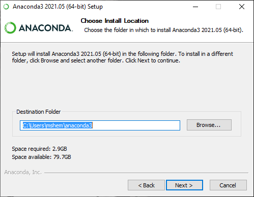
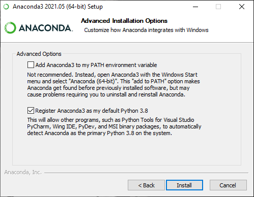
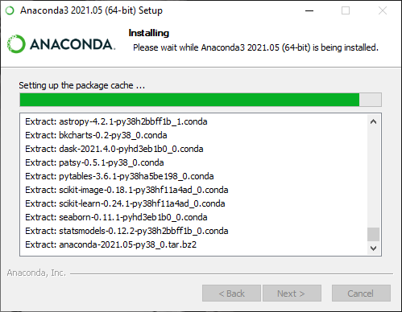

Hazırlık¶
Python’da kod yazmak veya yazılmış bir kodu çalıştırmak isterseniz, Python’ı kurmanız gerekiyor.
Resmi Python¶
Python’ı resmi web sayfasından tam olarak 0₺’ye indirip kurabilirsiniz. İndirimlerden haberdar olmak için Python’ın resmi web sayfasına abone olmayı unutmayınız.

Python’ın farklı versiyonları vardır. Bu metni yazdığımda kararlı en güncel versiyon 3.10 olmalı. Fakat biz daha
geriden gelerek işimizi garantiye alacağız. Dolayısıyla 3.9 versiyonunu kullanacağız.


{kind=link}
{kind=link}
Anaconda Python¶
Biz TİPlerin tembelliği ve tembellikten doğan fazla mesaimizi bildiğim için, size daha mantıklı bir python ortamı tavsiye edeceğim.
Python’ın anaconda versiyonunu kuracağız. Bunun için Anaconda’nın individual edition ‘ını kuracağız.
Kurulum¶
indirme işlemi bitince kurulum işlemi yapacağız ve sizi temin ederim çif tıkla->next->next->next... olmayacak.

İlk pencere merhaba penceresidir.

İkinci pencere lisans ve sözleşme penceresidir.

Üçüncü pencere kurulumu sistem genelinde mi yoksa kullanıcıya mı yapılacağını sorar. Yalnızca kullanıcıya kurulum yapmanız tavsiye edilir.
{kind=link}
Dördüncü pencere kurulumu nereye yapacağını sorar. Kullanıcı dizininde olması tavsiye edilir.
{kind=link}
Beşinci pencere Python’ın sistem yoluna eklemek isteyip istemediğinizi sorar. Bence istemeyin.
{kind=link}
Bu pencerede kahve alın.

Bu pencerede güle güle penceresidir.

“Gider ayak sitemize girmek ister misin?” pnceresi.
Gördünüz mü? Ne kadar kolay.
Neden Anaconda?¶
Tipik bir TİP’in kurulumu daha kolay olan resmi Python’ı kurmak yerine neden Anaconda’yı tercih edeceğini merak ediyorsunuz değil mi?
Zira ileride anaconda hayatımızı acayip kolaylaştıracak.
Deneme¶
Bakalım Python çalışıyor mu?

Başlat menüsünden anaconda alt menüsü açarak Anaconda Prompt’a tıklayınız.
{kind=link}
Tebrikler. Artık aşırı gelişmiş bir hesap makineniz var.
IDE¶
Python ile terminalde işlemler yapabilirsiniz. Hatta sırf bunun için geliştirilmiş ortamlar bile var. ipython gibi.
Lakin bizim bir geliştirme ortamına ihtiyacımız olacak.
Bunun için IDE(Integrated Development Environment: Tümleşik Geliştirme Ortamı) kullanacağız. IDE’ler Steroid almış metin düzenleicileridir. Hedeflendikleri dillerde yazılım geliştiricisine, kodun farklı bölgelerini renklendirerek, gerektiğinde “Hop aga. Yanlışın var.” diyerek yardımcı olurlar.